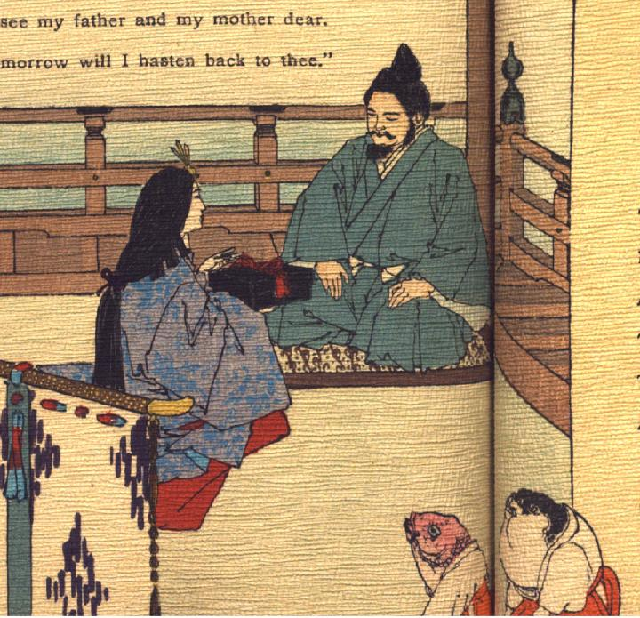

玉手箱を浦島太郎に渡す乙姫。女房装束で、髪を後ろで一つにまとめた乙姫が座って、玉手箱を手に、浦島太郎に話しかけている。浦島太郎は着物に袴、烏帽子姿で敷物の上に座っている。画面の手前に河豚と鯛らしい魚が白い着物に赤い袴という女官のような装束で、座って控えている。
著作者：A.Lloyd／出典：親書誌：U426_nichibunken_0105：Poetical greetings from the Far East／日付：2006／資源識別子：U426_nichibunken_0105_0003_0000
Copyright (c)2010- International Research Center for Japanese Studies, Kyoto, Japan. All rights reserved.